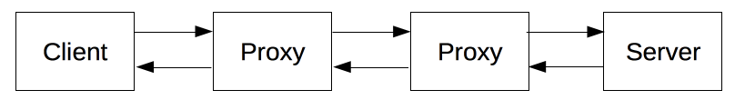

HTTP is a {{glossary("protocol")}} which allows the fetching of resources, such as HTML documents. It is the foundation of any data exchange on the Web and a client-server protocol, which means requests are initiated by the recipient, usually the Web browser. A complete document is reconstructed from the different sub-documents fetched, for instance text, layout description, images, videos, scripts, and more.

Clients and servers communicate by exchanging individual messages (as opposed to a stream of data). The messages sent by the client, usually a Web browser, are called requests and the messages sent by the server as an answer are called responses.
 Designed in the early 1990s, HTTP is an extensible protocol which has evolved over time. It is an application layer protocol that is sent over {{glossary("TCP")}}, or over a {{glossary("TLS")}}-encrypted TCP connection, though any reliable transport protocol could theoretically be used. Due to its extensibility, it is used to not only fetch hypertext documents, but also images and videos or to post content to servers, like with HTML form results. HTTP can also be used to fetch parts of documents to update Web pages on demand.
Designed in the early 1990s, HTTP is an extensible protocol which has evolved over time. It is an application layer protocol that is sent over {{glossary("TCP")}}, or over a {{glossary("TLS")}}-encrypted TCP connection, though any reliable transport protocol could theoretically be used. Due to its extensibility, it is used to not only fetch hypertext documents, but also images and videos or to post content to servers, like with HTML form results. HTTP can also be used to fetch parts of documents to update Web pages on demand.
Components of HTTP-based systems
HTTP is a client-server protocol: requests are sent by one entity, the user-agent (or a proxy on behalf of it). Most of the time the user-agent is a Web browser, but it can be anything, for example a robot that crawls the Web to populate and maintain a search engine index.
Each individual request is sent to a server, which will handle it and provide an answer, called the response. Between this request and response there are numerous entities, collectively designed as {{glossary("Proxy", "proxies")}}, which perform different operations and act as gateways or {{glossary("Cache", "caches")}}, for example.

In reality, there are more computers between a browser and the server handling the request: there are routers, modems, and more. Thanks to the layered design of the Web, these are hidden in the network and transport layers. HTTP is on top at the application layer. Although important to diagnose network problems, the underlying layers are mostly irrelevant to the description of HTTP.
Client: the user-agent
The user-agent is any tool that acts on the behalf of the user. This role is primarily performed by the Web browser; a few exceptions being programs used by engineers, and Web developers to debug their applications.
The browser is always the entity initiating the request. It is never the server (though some mechanism have been added over the years to simulate server-initiated messages).
To present a Web page, the browser sends an original request to fetch the HTML document from the page. It then parses this file, fetching additional requests corresponding to execution scripts, layout information (CSS) to display, and sub-resources contained within the page (usually images and videos). The Web browser then mixes these resources to present to the user a complete document, the Web page. Scripts executed by the browser can fetch more resources in later phases and the browser updates the Web page accordingly.
A Web page is a hypertext document. This means some parts of displayed text are links which can be activated (usually by a click of the mouse) to fetch a new Web page, allowing the user to direct their user-agent and navigate through the Web. The browser translates these directions in HTTP requests, and further interprets the HTTP responses to present the user with a clear response.
The Web server
On the opposite side of the communication channel, is the server which serves the document as requested by the client. A server presents only as a single machine virtually: this is because it may actually be a collection of servers, sharing the load (load balancing) or a complex piece of software interrogating other computers (like cache, a DB server, e-commerce servers, …), totally or partially generating the document on demand.
A server is not necessarily a single machine, but several servers can be hosted on the same machine. With HTTP/1.1 and the {{HTTPHeader("Host")}} header, they may even share the same IP address.
Proxies
Between the Web browser and the server, numerous computers and machines relay the HTTP messages. Due to the layered structure of the Web stack, most of these operate at the transport, network or physical levels, becoming transparent at the HTTP layer, and could add significant impact on performance. Those operating at the application layers are generally called proxies. These can be transparent, or not (changing requests going through them or not), and may perform numerous functions:
- caching (the cache can be public or private, like the browser cache)
- filtering (like an antivirus scan, parental controls, …)
- load balancing (to allow multiple servers to serve the different requests)
- authentication (to control access to different resources)
- logging (allowing the storage of historical information)
Basic aspects of HTTP
HTTP is simple
Even with more complexity, introduced in HTTP/2 by encapsulating HTTP messages into frames, HTTP is generally designed to be simple and human readable. HTTP messages can be read and understood by humans, providing easier developer testing, and reduced complexity for new-comers.
HTTP is extensible
Introduced in HTTP/1.0, HTTP headers made this protocol easy to extend and experiment with. New functionality can even be introduced, by a simple agreement between a client and a server about a new header's semantics.
HTTP is stateless, but not sessionless
HTTP is stateless: there is no link between two requests being successively carried out on the same connection, or not. This immediately becomes problematic when users wanted to interact with a page in a coherent way, for example with an e-commerce shopping basket. Using header extensibility, HTTP Cookies are added to the workflow, allowing session creation on each HTTP request to share the same context, or the same state.
While the core of HTTP itself is stateless, HTTP cookies allow the use of stateful sessions.
HTTP and connections
A connection is controlled at the transport layer, and therefore fundamentally out of scope for HTTP. Though HTTP doesn't require the underlying transport protocol to be connection-based; only requiring it to be reliable, or not loose messages (so at minimum presenting an error). Among the two most common transport protocols on the Internet, TCP is reliable and UDP isn't. HTTP subsequently relies on the TCP standard, which is connection-based, even though a connection is not always required.
HTTP/1.0 opened a TCP connection for each request/response exchange, introducing two major flaws: opening a connection needs several round-trips of messages and therefore slow, but becomes more efficient when several messages are sent, and regularly sent: warm connections are more efficient than cold ones.
In order to mitigate these flaws, HTTP/1.1 introduced pipelining (which proved difficult to implement) and persistent connections: the underlying TCP connection can be partially controlled using the {{HTTPHeader("Connection")}} header. HTTP/2 went a step further by multiplexing messages over a single connection, helping keep the connection warm, and more efficient.
Experiments are in progress to design a better transport protocol more suited to HTTP. For example, Google is experimenting with QUIC which builds on UDP to provide a more reliable and efficient transport protocol.
What can be controlled by HTTP
The extensible nature of HTTP has allowed to control more and more functionality of the Web over the years. Cache or authentication methods are functions controlled early by HTTP, on the other hand, the ability to relax the origin constraint has been added only in the 2010s.
This is a list of common features controllable using HTTP.
- Cache
How documents are cached can be controlled by HTTP. The server can instruct proxies and clients what to cache and for how long, while the client can instruct intermediate cache proxies to ignore the stored document. - Relaxing the origin constraint
To prevent snooping or other privacy invasions, browsers enforce a strict separation between Web sites. Only pages from the same origin can access to the whole information of a Web page. Such constraint is a burden, and servers, via HTTP headers, can relax it, so that the document may be a patchwork of information coming from different domains (there are security-related reasons to do so in some cases). - Authentication
Some pages can be protected so that only specific users can access it. Basic authentication can be provided directly by HTTP, either using the {{HTTPHeader("Authenticate")}} and similar headers, or by setting a specific session using HTTP cookies. - Proxy and tunneling
Often servers or clients, or both, are located on intranets and hide their true address to others. HTTP requests go then through proxies to cross the network barrier. Not all proxies are HTTP proxies, some, like those using the SOCKS protocol, operate at a lower level (and other protocols, like ftp can be handled by them too). - Sessions
The use of cookies allows to link requests with a state on the server. This creates sessions, although basic HTTP is a state-less protocol. This is useful not only for e-commerce shopping baskets, but also for any site allowing configuration of the output.
HTTP flow
When the client wants to communicate with a server, either being the final server or an intermediate proxy, it performs the following steps:
- Open a TCP connection (or reuse of a previous one): The TCP connection will be used to send one or several requests, as well as getting the answer. The client may reuse an existing connection, or open several TCP connections to the servers.
- Send an HTTP message: HTTP messages (before HTTP/2) are human-readable. With HTTP/2, these simple messages are encapsulated in frames, making them impossible to read directly, but the principle remains the same.
GET / HTTP/1.1 Host: developer.mozilla.org Accept-Language: fr - Read the response sent by the server:
HTTP/1.1 200 OK Date: Sat, 09 Oct 2010 14:28:02 GMT Server: Apache Last-Modified: Tue, 01 Dec 2009 20:18:22 GMT ETag: "51142bc1-7449-479b075b2891b" Accept-Ranges: bytes Content-Length: 29769 Content-Type: text/html <!DOCTYPE html... (here comes the 29769 bytes of the requested web page) - Close or reuse the connection for further requests.
When HTTP pipelining is activated, several requests can be sent successfully, without waiting for the first response to be fully received. HTTP pipelining has been proven difficult to implement in existing networks, where old pieces of software coexist with modern versions, and has been replaced by the more robust mechanism of multiplexing requests in a frame in HTTP/2.
HTTP Messages
HTTP/1.1 and earlier HTTP messages are human-readable. In HTTP/2, these messages are embedded into a new binary structure, a frame, allowing optimizations like compression of headers and multiplexing. Even if only part of the original HTTP message is sent in this version of HTTP, the semantics of each message is unchanged and the client reconstitutes (virtually) the original HTTP/1.1 request; it is therefore still useful to consider HTTP/2 messages in the HTTP/1.1 format.
There are two types of HTTP messages, requests and responses, each with its specific format.
Requests
An example HTTP request:

Requests consists of the following elements:
- An HTTP method, usually a verb like {{HTTPMethod("GET")}}, {{HTTPMethod("POST")}} or a noun like {{HTTPMethod("OPTIONS")}} or {{HTTPMethod("HEAD")}} that defines the operation the client wants to perform. Typically, a client wants to fetch a resource (using
GET) or post the value of an HTML form (usingPOST), though other operations may be needed in other cases. - The path of the resource to fetch, it is basically the URL of the resource stripped from elements that are obvious from the context, that is without the {{glossary("protocol")}} (
http://), the {{glossary("domain")}} (heredeveloper.mozilla.org), or the TCP {{glossary("port")}} (here80). - The version of the HTTP protocol.
- Optional headers that convey extra-information for the servers.
- For some methods like
POST, a body, similar to the one in responses, that contains the resource sent.
Responses
An example responses:

Responses consists of the following elements:
- The version of the HTTP protocol they follow.
- A status code, indicating if the request has been successful or not, and why.
- A status message, that is a non-authoritative short description of the status code.
- HTTP headers, like for requests.
- Optionally, but much more common than in requests, a body containing the fetched resource.
Conclusion
HTTP is an extensible protocol that is easy to use. The client-server structure combined with the ability to easily add headers allows HTTP to grow with the extended capabilities of the Web.
Even if HTTP/2 is adding some complexity by embedding HTTP messages in frames to improve performance, from the point of view of the application, the basic structure of messages has been the same since the release of HTTP/1.0. The flow of a session remains simple, allowing it to be investigated and to debugged with a simple HTTP message monitor.